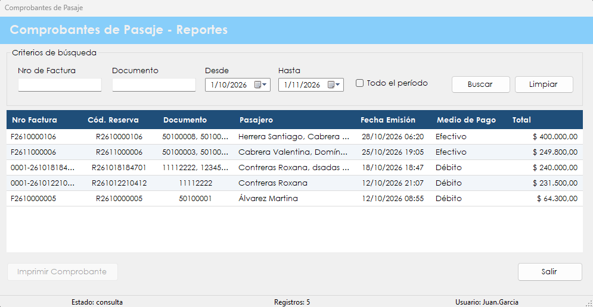

Permite buscar los comprobantes ya emitidos y volver a imprimirlos.
Después de la venta, un cliente puede pedir una copia de su comprobante, o puede hacer falta revisar qué se facturó en un período. Este reporte reúne los comprobantes emitidos y permite encontrarlos por número de factura, por documento o por fecha.
Es una consulta: no genera ventas ni modifica datos. La reimpresión produce nuevamente el documento en PDF a partir de la información registrada.
Desde el menú principal, en Reportes › Comprobantes de Pasaje. La opción aparece si el rol del usuario incluye la patente correspondiente.

| Control | Para qué se usa |
|---|---|
| Nro de Factura | Filtra por el número escrito, aunque sea solo una parte. |
| Documento | Filtra por el documento de un pasajero, aunque sea solo una parte. |
| Desde y Hasta | Definen el período de emisión. No pueden superar el día de hoy. |
| Todo el período | Tildada, ignora las fechas y busca en todos los comprobantes. |
| Buscar | Muestra los comprobantes que cumplen los criterios. |
| Limpiar | Borra los criterios y vuelve a la consulta del último mes. |
| Grilla de comprobantes | Muestra Nro Factura, Cód. Reserva, Documento, Pasajero, Fecha Emisión, Medio de Pago y Total. |
| Imprimir Comprobante | Se habilita al elegir un comprobante. Genera el PDF y lo abre. |
| Salir | Cierra la pantalla. |
| Barra de estado | Muestra el estado de la consulta, la cantidad de registros y el usuario. |
| Situación | Qué significa y qué hacer |
|---|---|
| La grilla muestra "No hay datos para mostrar." | Ningún comprobante cumple los criterios, y la barra de estado indica "sin resultados". Conviene ampliar el período o tildar Todo el período. |
| "Error al recuperar los comprobantes:" seguido del motivo | No se pudo cargar la grilla. Después de los dos puntos se indica la causa técnica. |
| "Debe seleccionar un comprobante de la grilla." | Hay que hacer clic en una fila antes de imprimir. |
| "No se pudo recuperar la reserva del comprobante." | No se encontró la reserva asociada y el documento no se generó. Conviene avisarle al administrador. |
| "El comprobante no tiene pasajes emitidos asociados." | El documento no se generó porque no hay pasajes para incluir. Conviene avisarle al administrador. |
| "Error al generar el comprobante:" seguido del motivo | El PDF no se pudo crear. Después de los dos puntos se indica la causa técnica. |